01 · Intelligent control
Fuzzy inference evaluates the input conditions and generates the desired steering-assist torque.
FINAL YEAR PROJECT · SEPTEMBER 2025 – MAY 2026
Designed and developed an Intelligent Electric Power Steering (EPS) system as part of a four-member engineering team. The project integrated mechanical design, electronic sensing, embedded control, and intelligent steering assistance into a motorized go-kart prototype. A hybrid fuzzy-logic and PID architecture was developed to determine steering assistance according to driver input and operating conditions.
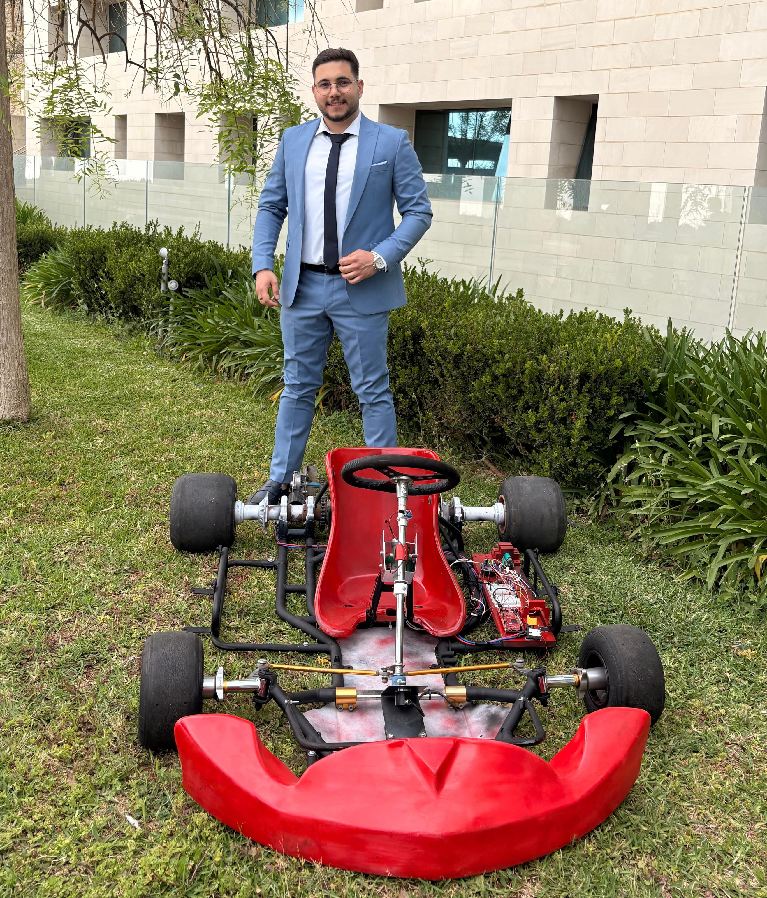
MECHATRONICS · INTELLIGENT CONTROL · EMBEDDED SYSTEMS
The project investigated an adaptive steering-assistance approach combining fuzzy-logic decision-making with PID-based motor-current regulation.
Driver-related inputs were processed to determine the required assist torque, while a feedback-based control loop regulated the electric motor response. The development extended from mechanical design and sensor development to controller implementation and physical prototype integration.
The project was motivated by the growing demand for adaptive, energy-efficient, and responsive steering technologies in modern vehicles. Conventional steering-assist strategies often rely on predefined control characteristics that cannot fully accommodate changing operating conditions.
Our objective was to investigate an intelligent control approach capable of dynamically regulating steering assistance according to driver input and vehicle-related operating conditions while maintaining mechanical functionality and driver control.
The project therefore combined mechanical development with sensor instrumentation and a hybrid intelligent-control architecture to explore an adaptive steering-assistance proof of concept.
The EPS system was organized around four interconnected functions: input sensing, intelligent assistance generation, motor actuation, and feedback regulation.
Steering-related measurements and operating inputs were used by the fuzzy-logic controller to determine the desired assist torque. This command was then passed to the lower-level motor-control subsystem.
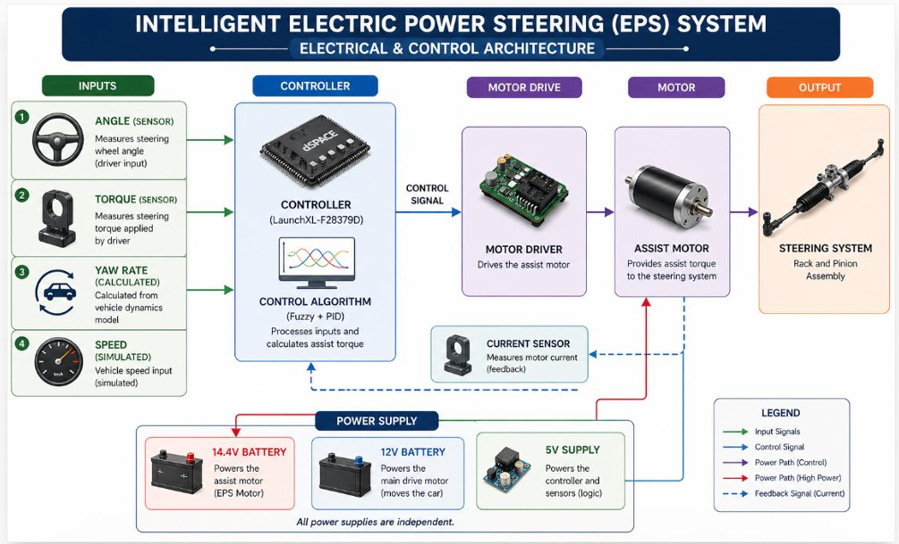
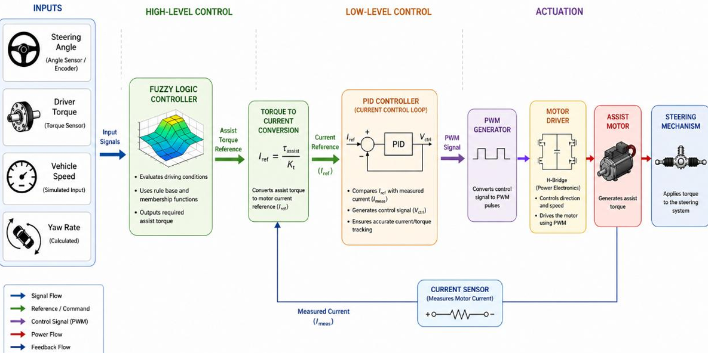
The architecture separates high-level steering-assistance decisions from lower-level motor-control operations.
This modular arrangement connects the sensing, decision-making, actuation, and feedback components into one mechatronic system.
Following the definition of the system architecture, mechanical development focused on designing the steering assembly and supporting go-kart structure. SolidWorks was used to develop the chassis geometry, steering components, mechanical linkages, and component interfaces.
A major challenge was adapting the original full-scale automotive steering concept to a compact, manufacturable kart platform while preserving the essential steering functionality required by the project.
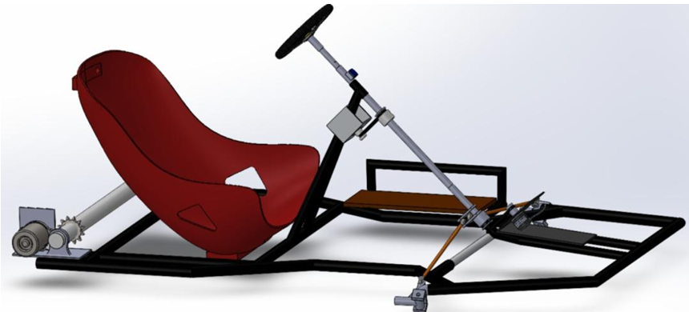
The chassis model established the physical platform for the steering assembly, seating arrangement, and mechanical component integration.
CAD development supported the evaluation of component positioning, structural arrangement, and the feasibility of the overall prototype.
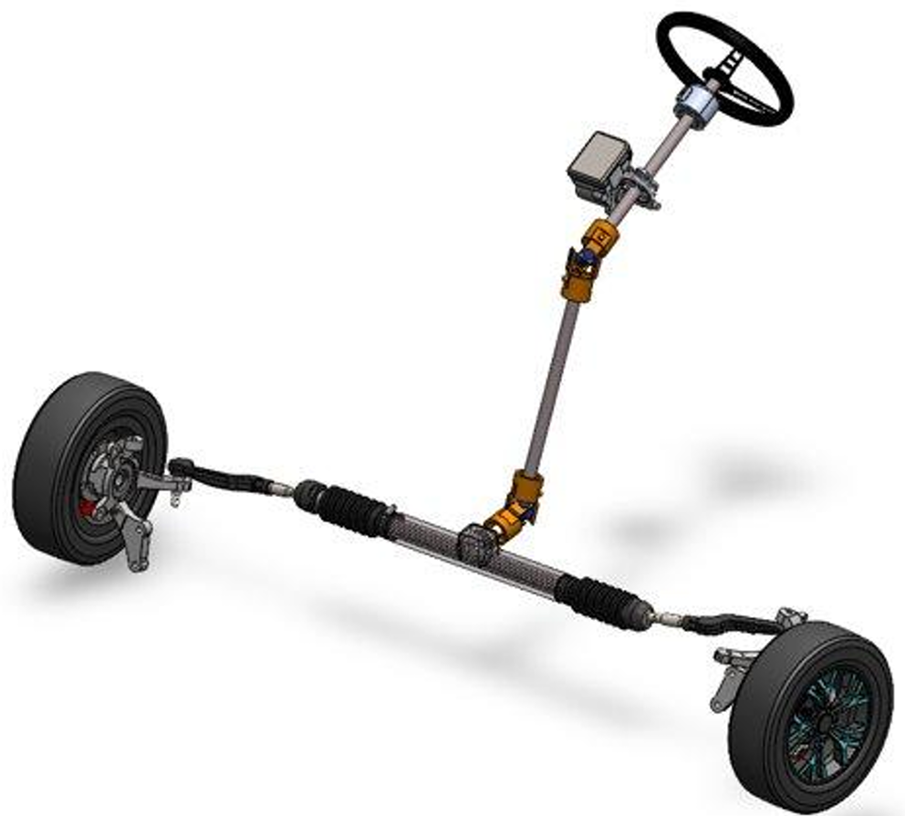
The steering assembly was modeled to investigate the transmission of driver input through the steering column and mechanical linkage.
During prototype adaptation, the initial steering concept was modified to a simpler linkage arrangement suitable for the manufactured kart.
After completing the mechanical design stage, the team proceeded with manufacturing, component preparation, and physical assembly. The development process involved machining, welding, drilling, mechanical fitting, and additive manufacturing.
Particular attention was given to the alignment of steering components, mechanical interfaces, and integration of the electronic hardware with the physical platform.
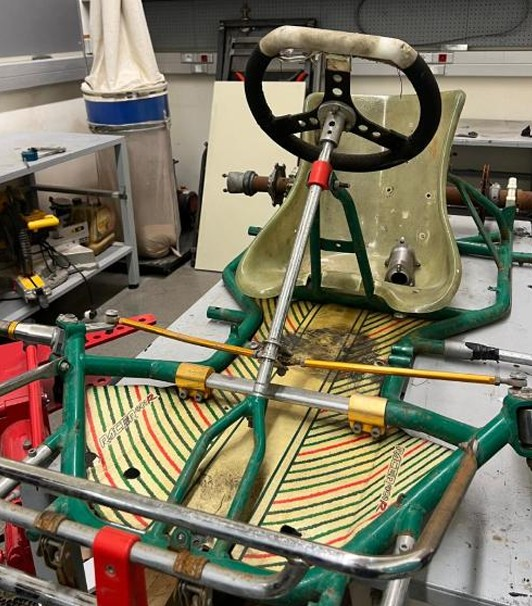
The transition from the digital design to a physical platform required mechanical modifications, component fitting, and adjustments to the steering arrangement.
This stage translated the initial engineering concept into a prototype that could be manufactured, assembled, and evaluated.
With the mechanical platform established, the next stage involved integrating the sensing components required to acquire steering-related information.
The project incorporated torque measurement using strain gauges, steering-angle measurement using an incremental rotary encoder, and electric-motor current feedback. Together, these components formed the instrumentation layer connecting the mechanical steering system to the electronic control architecture.
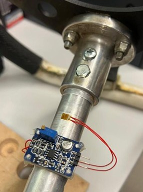
A strain gauge was integrated into a machined aluminum steering-shaft extension to investigate torsional deformation under applied steering torque.
The sensor signal was conditioned and calibrated to obtain torque-related information for the control system.
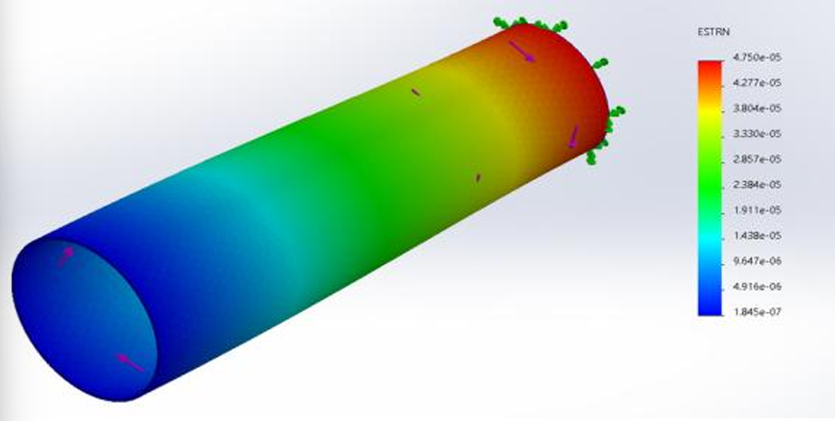
Structural simulation was used to investigate the strain distribution along the steering shaft under the modeled loading conditions.
This analysis supported the mechanical evaluation of the custom torque-sensing arrangement.
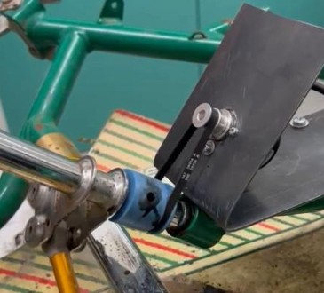
An incremental rotary encoder was integrated into the steering mechanism to measure angular displacement and provide steering-position information.
Encoder output was used during the steering-input measurement and control-development process.
After establishing the sensing layer, the project focused on developing an intelligent controller capable of determining the appropriate steering-assist torque according to driver input and operating conditions.
Fuzzy logic was selected to evaluate combinations of input conditions through membership functions and a rule-based inference system. This allowed the controller to generate assist-torque decisions based on more than one fixed steering characteristic.
The four controller inputs were vehicle velocity, steering torque, yaw rate, and steering angle. Their combined evaluation determined the fuzzy controller's assist-torque output.
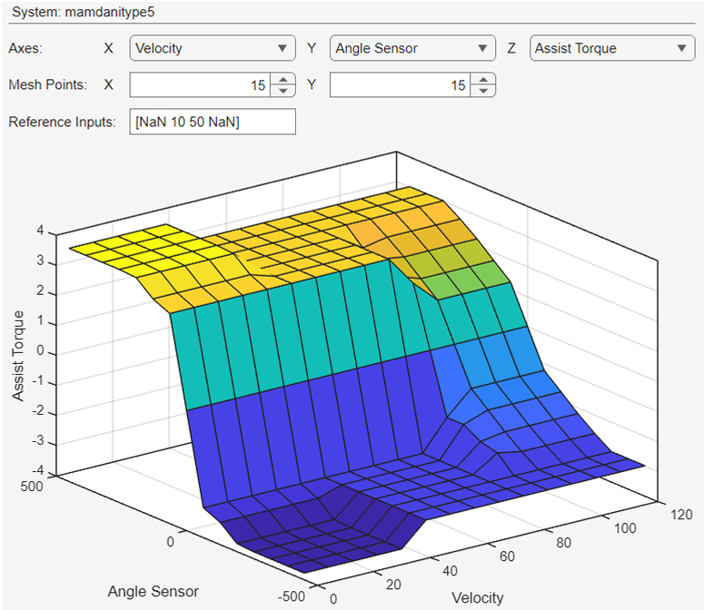
The control surface visualizes how the fuzzy controller maps operating conditions to the assist-torque output.
Instead of applying a single fixed assistance level, the controller evaluates combinations of operating inputs to determine the desired steering assistance.
The objective is to balance steering effort and responsiveness with stability-related considerations.
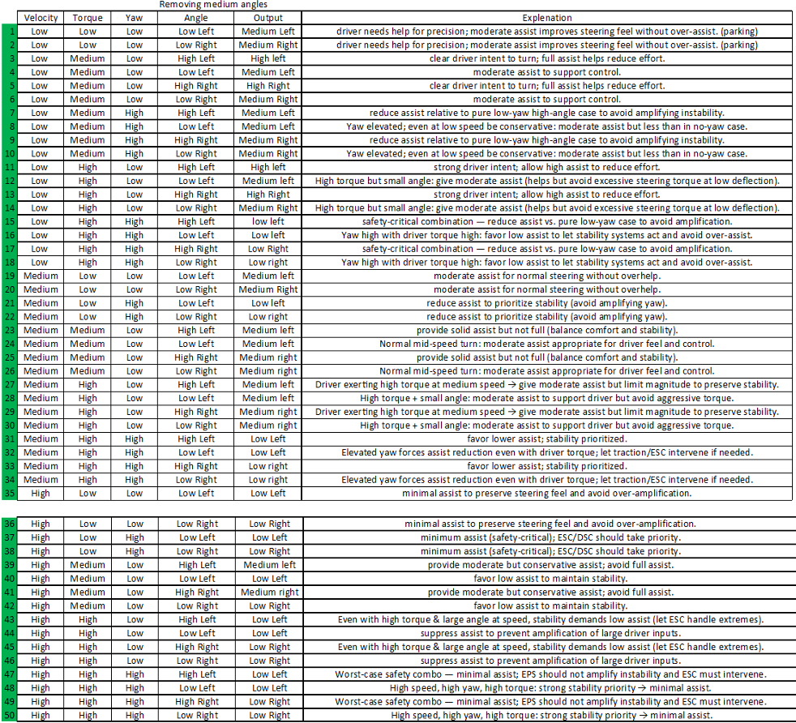
The fuzzy rule base translates combinations of input conditions into linguistic assist-torque decisions.
For example, low-speed steering may require greater assistance, whereas high-speed conditions combined with elevated yaw call for more conservative assistance.
The final documented rule set contains 50 tuned rules designed to balance steering comfort, responsiveness, and stability.
Once the intelligent-control strategy was established, the next stage focused on connecting the controller to the physical actuator through an embedded control architecture.
The project used the TI TMS320F28379D microcontroller as its embedded processing platform. The architecture connects sensor acquisition, control computation, and motor-driver commands.
The fuzzy controller generates the desired assist torque. This command is converted into a motor-current reference using the motor torque constant. A PID controller then regulates motor current using measured current feedback.
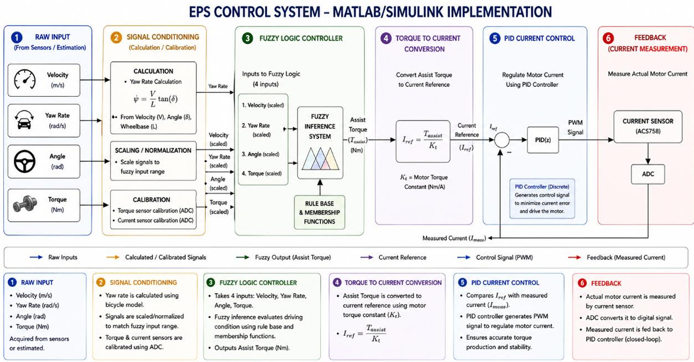
Fuzzy inference evaluates the input conditions and generates the desired steering-assist torque.
The assist-torque command is converted into a desired motor-current reference.
PID control compares the reference with measured motor current and regulates the motor-drive command.
The embedded architecture links the microcontroller with the sensing subsystem, motor driver, and steering actuator.
Separating high-level intelligent assistance generation from lower-level motor-current regulation is a key feature of the hybrid control architecture.
Validation was performed across the mechanical, sensing, and control subsystems to evaluate their individual behavior and their integration within the overall steering-assistance system.
The evaluation process combined finite element analysis, sensor calibration, encoder measurements, fuzzy-controller evaluation, and experimental system integration. Each stage addressed a different aspect of the EPS development process, from structural behavior to intelligent assistance generation and physical implementation.
08.1 · MECHANICAL VALIDATION
Finite element analysis was used to investigate the structural response of the steering components under the specified loading and boundary conditions.
The strain distribution provides insight into how mechanical deformation develops along the steering shaft and supports the evaluation of the torque-sensing region.
This analysis complemented the mechanical design process and helped assess the suitability of the shaft configuration for the sensing arrangement.
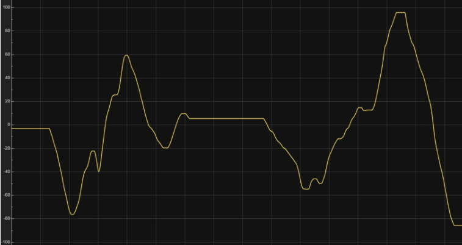
08.2 · SENSOR VALIDATION
The incremental rotary encoder was evaluated through recorded measurements as the steering mechanism was rotated through different angular positions.
The resulting signal demonstrates the encoder's response to changes in steering position and provides measurement data for the control system.
Sensor calibration and signal acquisition were essential to obtaining meaningful steering-input information for subsequent controller evaluation.
08.3 · INTELLIGENT CONTROL VALIDATION
The fuzzy controller was evaluated through its generated control surface, illustrating the relationship between operating inputs and the resulting assist-torque output.
The developed rule base incorporated combinations of vehicle velocity, steering torque, yaw rate, and steering angle to determine the appropriate assistance response.
The controller's response was refined to balance steering assistance with stability-related considerations across different operating conditions.
08.4 · EMBEDDED CONTROL VALIDATION
The lower-level control architecture converts the desired assist torque into a motor-current reference. A PID controller uses the difference between the reference and measured motor current to generate the motor-control command.
This architecture connects the intelligent fuzzy controller to the physical actuation subsystem through a feedback-based regulation loop.
The implementation and integration of these control functions formed an important part of the embedded system development and testing process.
The final validation stage focused on bringing the mechanical, electronic, sensing, and control subsystems together within the motorized go-kart prototype.
The integrated platform provided a physical environment for evaluating component compatibility, sensor feedback, controller integration, and steering-system operation. This represented the transition from individual subsystem development to an integrated mechatronic prototype.
Steering assembly, mechanical linkages, chassis, and actuator interfaces were incorporated into the kart.
Torque, steering-angle, and motor-current sensing were incorporated into the system architecture.
Fuzzy-logic assistance generation and PID-based current regulation formed the proposed hybrid control strategy.
Developing the EPS prototype required resolving challenges across mechanical, electronic, and control domains. The integration of these subsystems involved iterative design modifications, calibration, and troubleshooting.
Adapting the initial automotive steering concept to a compact, manufacturable kart platform required modifying the mechanical arrangement and steering linkages.
Developing a custom strain-gauge sensing arrangement required mechanical preparation, sensor integration, signal conditioning, and calibration.
Acquiring meaningful steering and torque measurements required coordinating sensor installation, calibration, and electronic signal processing.
Integrating sensing hardware, embedded computation, motor electronics, and control logic required coordinating several interconnected subsystems.
Refining the fuzzy rule base and PID regulation required evaluating steering assistance, responsiveness, and stability.
Combining the mechanical steering structure with sensors, wiring, and actuator electronics required iterative fitting and troubleshooting.
As part of a four-member engineering team, I contributed across the mechanical, electronic, and control development workflow. My involvement covered design, sensing, embedded integration, manufacturing, and experimental evaluation.
Contributed to SolidWorks modeling, chassis development, steering mechanisms, mechanical linkages, and custom component interfaces.
Contributed to the development and implementation of the hybrid fuzzy-logic/PID control strategy using MATLAB and Simulink.
Contributed to strain-gauge torque sensing, rotary-encoder angle measurement, and motor-current feedback integration.
Worked on integrating the TI C2000 microcontroller, motor-driver electronics, sensing hardware, and control system.
Participated in turning, welding, drilling, mechanical fitting, additive manufacturing, and physical prototype assembly.
Participated in system integration, calibration, troubleshooting, and experimental evaluation of steering response and control behavior.
The project culminated in the development and assembly of a motorized go-kart prototype incorporating mechanical steering, sensing hardware, and embedded control electronics.
A hybrid fuzzy-logic/PID control architecture was developed to explore adaptive steering assistance, supported by sensor instrumentation, simulation, calibration, and experimental testing.
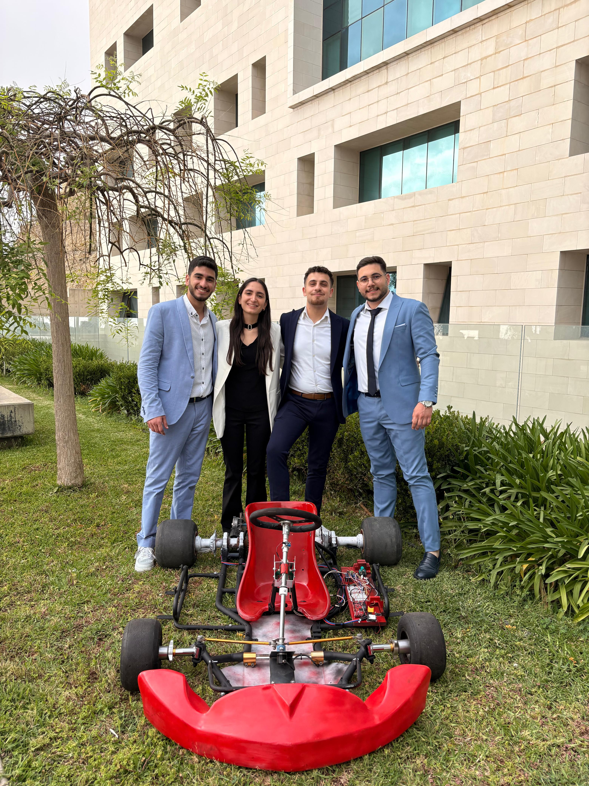
The final prototype brought together the mechanical steering structure, sensing components, electrical hardware, and control architecture.
The project provided practical experience in integrating intelligent control with physical mechatronic systems.
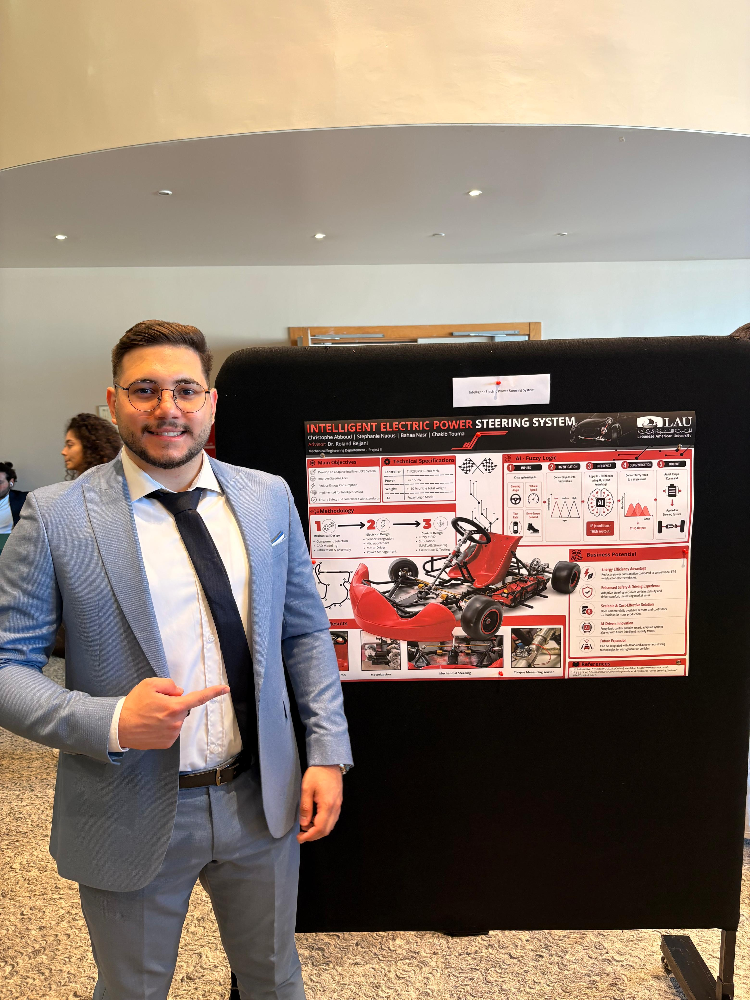
The project was presented through a technical poster communicating its objectives, methodology, mechanical development, electrical architecture, and intelligent control strategy.
The presentation brought together the project's multidisciplinary engineering work and its physical prototype.